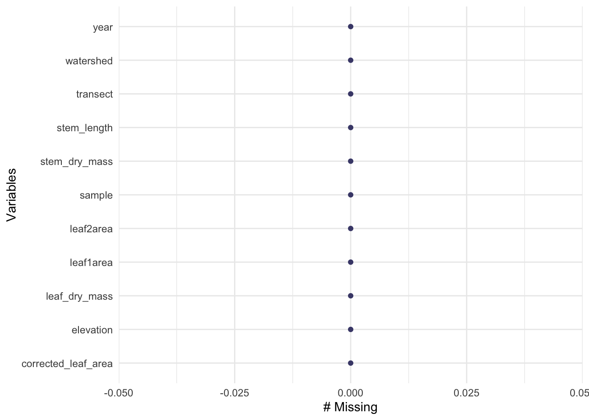
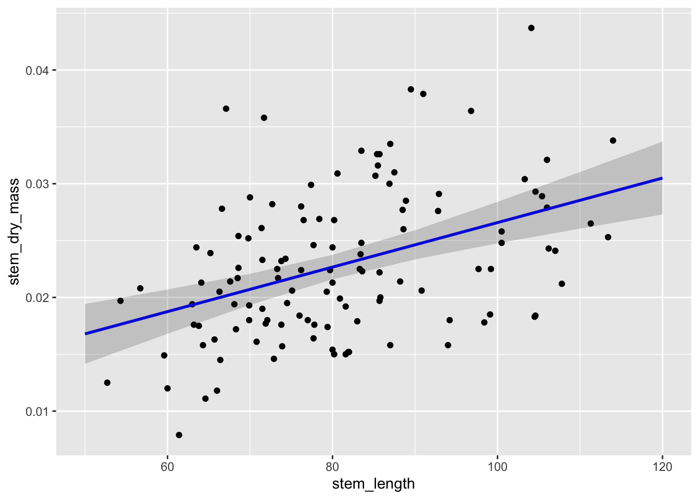

library(tidyverse)
library(here)
library(lterdatasampler)
library(performance)
library(broom) #puts all outputs from model into a table
library(flextable) #whole manual online, allows you to create tables that render nicely
library(ggeffects) #get predictions from models and plot them...
library(car) #pull out ANOVA tables specifically for linear models
library(naniar)Envs 193DS week 7 coding workshop
set up
Linear models
How does stem length predict stem dry mass?
maples_data <- hbr_maples |>
filter(year == 2003 & watershed == "Reference")Visualizing missing data
gg_miss_var(maples_data) #we have no missing observations for filtered data frame 
Create exploratory data visualization:
ggplot(data = maples_data, aes(x = stem_length, y = stem_dry_mass)) +
geom_point() #just looking at the plot, would hypothesize that there is a positive relationship
#Let’s try a model:
#lm() is how you run a linear model
#first, write model -- then check assumptions -- need to do this before interpreting model!
maples_model <- lm(stem_dry_mass ~ stem_length, data = maples_data)
maples_model
Call:
lm(formula = stem_dry_mass ~ stem_length, data = maples_data)
Coefficients:
(Intercept) stem_length
0.0070033 0.0001958 Check assumptions: 1. linear relationship between variables: yes! (used exploratory data viz) 2. independence of errors: yes! (making that assumption based on how the data were collected) 3. homoskedasticity of errors: yes! (making deicision from residuals vs fitted/scale-location plots) 4. normally distributed errors: yes! (looking at qqplot of rediduals)
#TRY running plot(maples_model) in console
#this will give diagnostic plots
#residuals vs fitted seems homoscedastic
#normal q-q looks pretty normal
#scale-location -- looks right, line is pretty straight
#residuals vs leverage -- looking for labeled points, there are some but they probs dont influnce predictions much because are not outside of dotted line range -> does not seem that there are outliers affecting model predictions
#display all on same grid
#set graphical parameters
par(mfrow = c(2,2))
plot(maples_model)
#we do not want the same dimensions for every plot
#so, turn of 2x2 griddev.off()#Putting things together to communicate
model predictions
#terms corresponds to whatever the predictor was in the model
predictions <- ggpredict(maples_model, terms = "stem_length")
#group = 1 means 1 continual predictor variable? #Plot predictions:
plot_predictions <- ggplot(data = maples_data, aes(stem_length, y = stem_dry_mass)) +
#first plot the underlying data
geom_point() +
#plitting model predictions from the predictions object from ggeffects
geom_line(data = predictions, aes(x = x, y = predicted), color = "blue", linewidth = 1) +
#plot the confidence interval around model estimates
geom_ribbon(data = predictions, aes(x = x, y = predicted, ymin = conf.low, ymax = conf.high), alpha = 0.2)
#do not use geom_smooth because it does not tell you where the model comes from, what the equation is, standard intervals, ect...
plot_predictions
#PREDICTIONS DATA:
#x is values from stem_length -- chooses nice numbers
#predicted y value or dry_massCreate tables
model_summary <- summary(maples_model)
model_squares <- anova(maples_model)
#shows something similar to a regular anova table
#r squared comes from ratio of the sum of squares....making a table
#when creating a table you want to render, DO NOT NAME IT
model_squares_table <- tidy(model_squares) |>
mutate(p.value = case_when(p.value <0.001 ~ "< 0.001")) |>
flextable() |> #easiest way to make this into a table
set_header_labels(df = "Degrees of Freedom", sumsq = "Sum of Squares") #change column names
model_squares_tableterm | Degrees of Freedom | Sum of Squares | meansq | statistic | p.value |
|---|---|---|---|---|---|
stem_length | 1 | 0.0008864214 | 0.00088642137 | 25.08876 | < 0.001 |
Residuals | 118 | 0.0041691066 | 0.00003533141 |
#use this to communicate about where r2 comes from